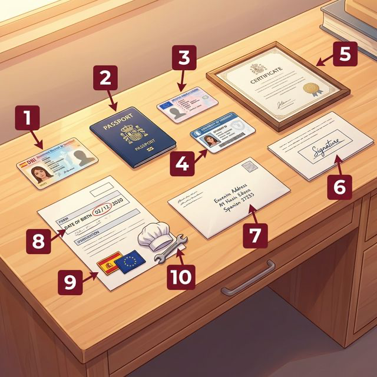

Cervantes: §1 Identidad: 데이터 수집 및 신분 확인을 위한 기본 정보 (이름, 나이, 국적, 직업, 주소 및 주요 신분 증명 서류)
¿Quién eres tú? (당신은 누구인가요?)
언어를 배우는 첫걸음은 나 자신을 정의하는 정보를 표현하는 것입니다. 이름, 국적, 나이, 그리고 우리가 누구인지 증명하는 서류들에 대해 배웁니다. 스페인어권 국가에서 가장 중요한 신분증인 'DNI'에 대해서도 알아봅시다.
개인 정보를 나타내는 핵심 서류와 항목들입니다. 삽화의 번호(①~⑩)가 아래 어휘 표와 정확히 대응됩니다.

| 번호 | Spanish | English Bridge | Korean Tip |
|---|---|---|---|
| 1 | el DNI / el carné | ID Card | '데엔이'라고 읽음 |
| 2 | el pasaporte | Passport ✅ | 완벽한 인지어 |
| 3 | el carné de conducir | License (Conducting) | 운전면허증 |
| 4 | el carné de estudiante | Student ID | '에스투디안테' 카드 |
| 5 | el certificado | Certificate ✅ | 증명서 |
| 6 | la firma | Firm (Confirmation) | 서명 / 사인 |
| 7 | la dirección | Direction → Address ✅ | 주소 |
| 8 | la fecha de nacimiento | Date of Birth | 태어난 날짜 |
| 9 | la nacionalidad | Nationality ✅ | 국적 |
| 10 | la profesión | Profession ✅ | 직업 |
✅ 표시된 단어는 영어와 거의 동일하거나 어원이 같아 기억하기 쉬운 어휘입니다.
나의 데이터를 말하거나 타인에게 질문할 때 꼭 필요한 표현입니다.
스페인어에서는 나이를 영어처럼 "am"이 아닌 "have"로 표현합니다. Ch.1에서 배운 tener를 정체성 표현에 활용합니다.
English Bridge: "I have 20 years" (Tengo 20 años) vs. English "I am 20 years old" — Spanish treats age as something you possess.
| 주어 (Subject) | tener | English |
|---|---|---|
| yo | tengo | I have |
| tú | tienes | you have |
| él/ella/usted | tiene | he/she has |
| nosotros/as | tenemos | we have |
| vosotros/as | tenéis | you all have |
| ellos/ellas/ustedes | tienen | they have |
ser and estar mean "to be." Think of ser as "What is it?" (permanent) and estar as "How/Where is it?" (temporary).비록 이번 장의 핵심은 아니지만, 나중에 배울 '완료' 시제에서 자주 쓰이는 불규칙 과거분사 형태들을 눈에 익혀두면 좋습니다:
스페인어 동사의 가장 기본이 되는 규칙 변화 동사들입니다:
국적을 나타내는 형용사는 꾸며주는 주어의 성(남자/여자)과 수(단수/복수)에 따라 바뀝니다.
English Bridge: Unlike English where "Korean" stays the same regardless of gender, Spanish nationality adjectives change endings to match the subject.
스페인 사람들에게 없어서는 안 될 가장 중요한 카드, DNI를 알아봅시다.
El DNI (Documento Nacional de Identidad) es la tarjeta más importante para un español. Es un documento inteligente que contiene un chip con todos los datos personales y la firma digital. En España, es obligatorio para todos los ciudadanos mayores de 14 años. Lo necesitas para todo: abrir una cuenta en el banco, entrar a un examen en la universidad, recoger un paquete en correos o viajar por los países de la Unión Europea sin necesidad de pasaporte.
La policía nacional es la encargada de emitir este documento. Cada DNI tiene un número único de ocho cifras y una letra al final. Este número es para toda la vida. Por eso, cuando te preguntan "¿Cuál es tu número?", normalmente se refieren al número de tu DNI.
[한국어 번역]
DNI(국가 신분증)는 스페인 사람에게 가장 중요한 카드입니다. 모든 개인 정보와 디지털 서명이 담긴 칩이 포함된 스마트 카드입니다. 스페인에서는 14세 이상의 모든 시민이 의무적으로 소지해야 합니다. 은행 계좌를 개설하거나, 대학교 시험을 치르거나, 우체국에서 택배를 찾거나, 여권 없이 유럽 연합(EU) 국가를 여행할 때 반드시 필요합니다.
국가 경찰이 이 서류를 발급하는 책임을 집니다. 각 DNI에는 8자리 숫자와 마지막에 한 글자의 알파벳으로 구성된 고유 번호가 있습니다. 이 번호는 평생 변하지 않습니다. 그래서 누군가 "¿Cuál es tu número?(당신의 번호가 무엇입니까?)"라고 묻는다면, 보통은 당신의 DNI 번호를 의미합니다.
Hola, soy Park Min-su. Soy coreano de Seúl, pero ahora vivo en Madrid para estudiar. Tengo veintidós años. En mi mochila siempre llevo mi pasaporte y mi carné de estudiante de la Universidad Complutense. Mi dirección en Madrid es la calle Mayor, número 10. Mi profesión es estudiante de arquitectura. ¡Me encanta mi nueva vida en España!
[한국어 번역]
마드리드에서의 새로운 삶
안녕하세요, 저는 박민수입니다. 서울 출신의 한국인이지만, 지금은 공부를 위해 마드리드에 살고 있습니다. 저는 22살입니다. 제 배낭 속에는 항상 여권과 마드리드 콤플루텐세 대학교 학생증이 들어 있습니다. 마드리드에서의 제 주소는 마요르 거리 10번지입니다. 제 직업은 건축학도입니다. 스페인에서의 제 새로운 삶이 정말 즐겁습니다!
Situación: Elena ha perdido su cartera en el parque y va a la comisaría de policía para informar del problema. El oficial de policía le pide sus datos personales para completar el formulario.
상황: 엘레나는 공원에서 지갑을 잃어버리고 경찰서에 신고하러 갑니다. 경찰관은 양식을 작성하기 위해 그녀의 개인 정보를 묻습니다.
| 🇪🇸 Español | 🇰🇷 한국어 |
|---|---|
| Oficial: Buenos días. ¿Cómo se llama usted? | 경찰관: 안녕하세요. 성함이 어떻게 되시나요? |
| Elena: Me llamo Elena Sánchez García. | 엘레나: 엘레나 산체스 가르시아입니다. |
| Oficial: ¿Cuál es su nacionalidad? | 경찰관: 국적이 어디신가요? |
| Elena: Soy española, de Sevilla. | 엘레나: 스페인 사람이고, 세비야 출신입니다. |
| Oficial: ¿Tiene su número de DNI a mano? | 경찰관: DNI 번호를 알고 계신가요? |
| Elena: Sí, es el 12345678-X. | 엘레나: 네, 12345678-X입니다. |
| Oficial: ¿Y cuál es su dirección actual? | 경찰관: 현재 주소는 어떻게 되시나요? |
| Elena: Vivo en la calle Alcalá, número 45. | 엘레나: 알칼라 거리 45번에 살고 있습니다. |
| Oficial: Muy bien. Por favor, firme aquí. | 경찰관: 좋습니다. 여기에 서명해 주세요. |
이 장에서 배운 내용을 확인해 보세요:
¡Excelente! 🎉 이제 여러분은 스페인어로 자신을 공식적으로 소개하고 필요한 정보를 제공할 수 있는 능력을 갖추었습니다.
나이는 영어의 "I am..."과 달리 Tener 동사를 쓴다는 점을 꼭 기억하세요! 또한 국적 형용사가 주어의 성별에 따라 변한다는 것은 영어에는 없는 스페인어 고유의 특성입니다.
다음 장에서는 우리의 사랑하는 '가족과 친구들'에 대해 이야기하며 더 풍성한 스페인어 대화를 나눠보겠습니다. ¡Buen trabajo!